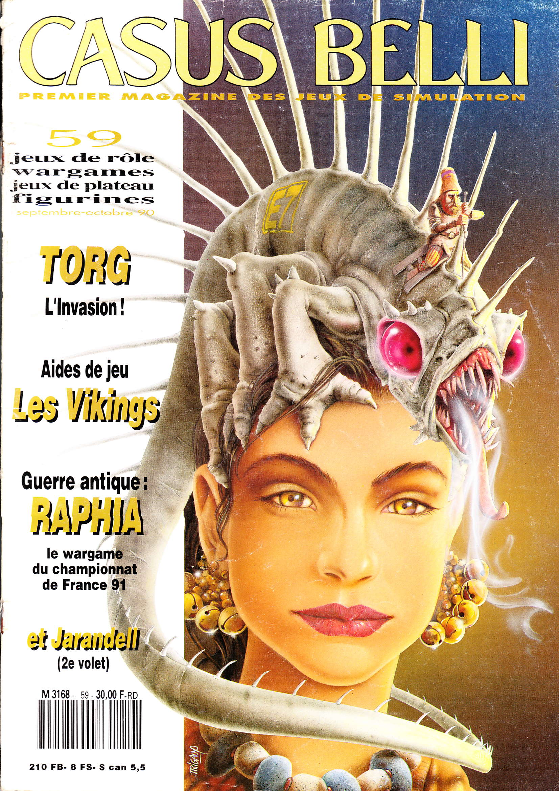
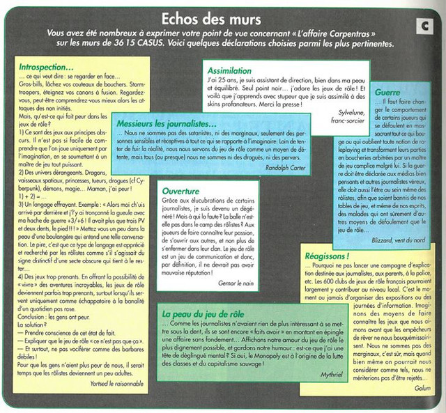

C’est la rentrée 1990 ! Enfin une rentrée plus tardive, car la période des congés d’été s’étale encore sur 10 semaines à l’époque : sortie des classes le 30 juin et reprise des cours le lundi 10 septembre. Avant de passer à la situation internationale et ce qui est encore la Crise du Golfe, petit tour donc sur la France de ce bimestre septembre – octobre, et nos voisins européens (enfin surtout allemand).
Comme on parle de rentrée scolaire, cela grogne dans les lycées mais contrairement à la décennie précédente, cela ne part des beaux lycées parisiens pour renverser la société bourgeoise fasciste, mais de façon plus terre-à-terre des lycées de banlieue contre l’insécurité et le manque de moyens. Ce mouvement va prendre de l’ampleur et on en parlera dans notre prochaine revue quand il atteindra son paroxysme.
Mais comme un écho, même si ce drame n’est pas relié à cette agitation de la jeunesse, l’autre actualité majeure de cette rentrée 1990 en France est la mort d’un jeune à Vaulx en Velin et des émeutes urbaines, qui ne sont pas les premières, mais installent définitivement le paysage de la banlieue et des cités dans le quotidien du pays. Je ne reviens pas sur les détails des événements qui se déroulent pendant 3 jours. J’ai retrouvé ces vidéos sur le site de l’INA qui remettent dans le contexte d’alors :
La couverture alors que les émeutes éclatent :
- https://www.ina.fr/ina-eclaire-actu/vid … -incidents
- https://www.ina.fr/ina-eclaire-actu/199 … x-en-velin
Quand la situation s’apaise mais que les esprits restent échauffés :
- https://www.ina.fr/ina-eclaire-actu/vid … x-en-velin
- https://www.ina.fr/ina-eclaire-actu/vid … nipulation
Outre-Rhin, le grand événement de cette rentrée est évidemment la Réunification allemande le 3 octobre, date désormais de la Fête Nationale du pays, et moins d’un an après la chute inattendue du Mur de Berlin. Celle-ci est précédée par le Traité de Moscou en septembre, réunissant les deux Allemagne et les anciennes 4 puissances alliées de la Deuxième Guerre Mondiale, et autorisant non seulement cette Réunification, mais aussi consacrant le renoncement de l’URSS à empêcher l’entrée de l’Allemagne de l’Est dans l’OTAN, suite à son intégration avec l’Allemagne de l’Ouest. Cette politique d’apaisement vaudra à Gorbatchev le Prix Nobel de la Paix un mois plus tard, mais c’est aussi une politique de nécessité car l’URSS continue à se débattre dans ses propres difficultés (troubles désormais en Géorgie).
Comme pour un mariage, celui allemand est cependant pour le meilleur et pour le pire, précipitant en quelques mois-années le modèle social est-allemand dans lequel était installé maintenant plusieurs générations, depuis la création de la RDA. La Treuhandanstalt a alors la charge de privatiser ou liquider 80% de l’économie, avec comme conséquence une chute drastique de moitié de la production industrielle d’alors, et un chômage qui passe officiellement de 7500 personnes à plus de 2,5 millions avec la casse sociale et le déclassement que cela entraîne.
On mentionnait le Prix Nobel de la Paix mais par une ironie des dates, ce n’est en revanche pas du tout celle-ci qui se profile du côté du Golfe. Après avoir libéré les derniers otages français, la situation hésite entre fermeté et tentative de négociations pour trouver une issue. Cette période d’intense activité politique et diplomatique est intéressante à relire dans ce qu’elle permet d’achever – modèle de Realpolitik à l’échelle de la région – mais aussi dans ses errements plus brouillons. On y retrouve en effet :
- La constitution d’un Front Occidental soudé auquel l’URSS est associée en tant qu’acteur neutre, pour ne pas dire neutralisé, en échange d’aides économiques massives. Ce Front Occidental s’exprime aussi avec la mobilisation des opinions publiques : dégoût de la dictature irakienne avec l’affaire des otages, mobilisation politique aux Etats-Unis où Bush est largement soutenu à la fois par les Démocrates et les Républicains, ou en France où Mitterrand marginalise ceux qui s’opposent à une intervention française (Chevènement, Le Pen)
- La propagation de ce qui n’est a priori qu’un conflit frontalier irako-koweïtien à un amalgame de l’ensemble des problèmes de la région : la Syrie négocie habilement sa participation à la coalition pour confirmer son emprise sur le Liban, le coût du pétrole après être revenu à des niveaux très bas s’enflamme – au propre comme au figuré, et l’Irak joue sur l’antagonisme avec Israël pour tenter de mobiliser le monde arabe. Alors que l’Etat Hébreu reste dans une position très attentiste, Saddam Hussein promet de l’attaquer, ce qui permet de jeter la confusion dans la diplomatie américaine qui tente de réagir en liant la résolution Crise du Golfe avec une solution parfaitement incertaine concernant les Territoires Occupés palestiniens…
Mais en cette fin octobre un rapport du Pentagone est présenté, et la messe semble être dite puisque celui-ci insiste sur l’inefficacité – ou l’efficacité à trop long terme – de l’embargo et les réserves considérables de l’armée irakienne pour tenir dans le temps. Les événements finiront donc par se précipiter dans les mois suivants.
Tout cela occulte le reste de l’actualité internationale, où on peut cependant noter en cette fin 1990 que les « sales guerres africaines » qui vont marquer la mémoire de la décennie émergent : d’abord au Liberia avec l’assassinat du président Samuel Doe début septembre, et au Rwanda avec les premiers massacres entre Tutsis et Hutus.
On va terminer avec un angle plus riant, avec quelques informations en direct de l’Oncle Sam. D’abord avec l’annonce de la désignation d’Atlanta pour organiser les JO de 1996, ou la première victoire de Pete Sampras à l’US Open. Mais ce début 1990 coïncide aussi avec l’explosion du rap qui domine les ventes de disques, et les controverses inhérentes à la mentalité puritaine américaine sur la perversion de la jeunesse par la culture hip-hop : c’est donc dans cette ambiance de changements profonds dans la société qu’en ce mois de septembre apparaît sur les écrans le premier épisode de la série du Prince de Bel Air, et rencontre d’emblée un succès qui ne se démentira pas ensuite.
Il est temps maintenant de revenir à nos réalités hexagonales et rôlistes. Le Casus 59 de cette rentrée 1990 se fait sous une couverture de Pascal Trigaux, toujours actif manifestement dans le domaine des jeux de plateau :

Achevé vers la fin du mois d’août pour une parution probablement vers mi-septembre, il aura pu reprendre les actualités troublées du mois d’août comme en témoigne l’édito qui rappelle le sens premier du terme Casus Belli…
Malgré cette actualité peu réjouissante, le monde du jeu continue de battre son plein, à mesure que les soubresauts de l’affaire de Carpentras s’estompent. Le France Sud Open à Toulon a eu lieu pendant l’été avec toujours la même importance et le même succès, et Casus annonce pour Octobre une soirée en partenariat avec Ouï FM au Palace (qui a dit que les geeks ne pouvaient pas être des jocks ?), qui restera exceptionnelle dans le sens où elle ne sera jamais rééditée et dont je vous remets ici la publicité – on en parlera au prochain numéro.
Spoiler:
Même si l’actualité intérieure passe en second plan après l’actualité internationale, cela n’empêche pas un abondant courrier – papier et électronique. Et oui concernant ce dernier, les mails et les groupes de discussion n’existent pas encore dans les foyers, mais le 3615 CASUS et ses BAL ou MUR les compensent pleinement, pourvu qu’on soit OK pour payer 37 000 FF la minute (pas de 3614) depuis le clavier ABCDaire de son Minitel. On retrouve donc un extrait dans ce numéro de tout plein de messages émus sur les accusations contre le JDR suite à la profanation de Carpentras.

On retrouvera les mêmes quelques années plus tard quand la cohorte des Dumas - Pradel renouvelleront les accusations contre le loisir, malheureusement avec plus d’insistance et de régularité. Le courrier papier est aussi abondant, mais moins en réaction à l’actualité brûlante : comme un bon forum phpBB, il s’agit notamment de lettres qui viennent répondre à des lettres précédentes et publiées.
C’est la fin de l’été, et Casus peut aborder aussi les conventions Outre-Atlantique. Bizarrement pour cette année 1990, la GenCon ne sera pas chroniquée et sera remplacée par un reportage sur une page et demi d’Origins de la GAMA avec force détails et annonces par un Laurent Henninger enthousiaste sur l’expérience vécue, probablement parce que la partie wargames n’en est pas le parent pauvre.
On passe sur les sorties et les critiques de ce bimestre. Les cordonniers étant les mieux chaussés, on commence avec Casus Belli qui accélère : annonce du futur Hors-Série pour Laelith, sortie de Cyber Age et suivi imminent de Aventures Extraordinaires et Machinations Infernales, le premier jeu en français de ce qui n’est pas encore le steampunk ! On ne peut malheureusement pas dire que le Dragon Radieux ait la même santé de fer : la revue a définitivement cessé de paraître et après une pause, l’éditeur tente un ultime chant du cygne avec la sortie du n°3 de Hurlelune ; mais le n°4 tout comme le Anashiva Reahna 3 pour Empires et Dynasties, bien qu’annoncés, verront le jour chez d’autres maisons.
A l’aune de l’économie en général, le marché se contracte même si cela reste imperceptible avec la production qui reste encore florissante. Les 4 Mousquetaires – Hexagonal, Jeux Descartes, Oriflam, Siroz Productions – restent prolixes avec des titres emblématiques, respectivement : la traduction annoncée de Shadowrun chez le premier, la 4ème édition de l’AdC chez le second, les traductions de Cyberpunk et Pendragon chez le troisième, et du INS / MV chez le dernier (Daemonis Compendium, puis Berserker et Baron Samedi). Casus critique aussi la sortie de Pour Votre Information pour James Bond, dont les 13 villes décrites alors doivent avoir maintenant un parfum de carte postale jaunie avec les années.
Retours de conventions américaines oblige, la revue des produits en VO est tout aussi prolixe : Days of Decision pour World in Flame ou Republic of Rome (Avalon Hill), Mansions of Madness pour l’AdC (Chaosium), Paranormal Animals of North America pour Shadowrun (FASA), la 2nde édition de Twilight 2000 (GDW) quand Casus va livrer un Portrait de Famille de la 1ère édition dans le même numéro, la nouvelle édition de Chill passé chez Mayfair, et pour Talsorian la 2nde édition de Cyberpunk qui repousse sa timeline de 2013 à 2020, encore si lointain, et une annonce concernant Amber puisque son auteur, Erick Wujcik, est encore dans l’écurie Talsorian à cette époque.
A propos de Multivers, Palladium lance le mégalomane Rifts pour sa part, et Steve Jackson Games continue de développer la gamme GURPS : GURPS Fantasy, GURPS Fantasy Folks, GURPS Bestiary et GURPS Magic. West End Games développe TORG tous azimuts (Nile Empire, la fin de la campagne avec The Forever City), sans oublier pour autant Star Wars (The Isis Coordinates). Enfin, Casus se lamente qu’une année complète est en train de s’achever sans solution pour rétablir la présence de TSR en France, et alors que la production liée au développement de la 2ème édition d’AD&D continue à sortir à un train d’enfer : les Complete Priest’s et Wizard’s Handbooks qui sont critiqués, mais aussi le Legend & Lore pour cette 2ème édition, et côté univers la résurrection prochaine de Ravenloft, du Spelljammer (Monstrous Compendium), et même du D&D (Hollow World). On conclue avec ICE qui continue à arpenter allègrement les plate-bandes de TSR avec Rolemaster, qui sort déjà son Companion IV qu’Anne Vétillard vous recommande ; et commence à piétiner chez Steve Jackson Games avec le Hero System expurgé de Champions et proposé en système générique.
L’épreuve du feu est consacrée à TORG par @Tristan. Il n’y a plus d’aide de jeu ou de scénario d’introduction désormais avec cette rubrique, mais l’encart scénario comprend un scénario TORG sur lequel je reviens juste après. Cette longue critique est très complète (3 pages bourrées de détails), et très descriptive (je pense que la critique pourrait facilement être réutilisée pour la version actuelle de TORG afin de le présenter aux joueurs - spécial clin d’œil pour @Dany40 ). Le seul bémol exprimé vient du prix, environ 350 FF, une fortune quand les jeux restent en général au-dessous, ou juste légèrement au-dessus de 200 FF. Mais Tristan semble en vanter largement les mérites, avec des superlatifs comme : vous aurez un très bon jeu, qui pourrait bien être « le » jeu de l’année. Par rapport à ce que je connais de TORG, j’ai quand même un peu de mal à m’en convaincre personnellement, d’autant que bruisse dans l’ombre une autre tendance dont on reparlera dans nos prochaines revues.
Or donc, pour revenir à CB et concernant les scénarios de ce numéro, on en trouvera 4 au menu :
• Commençons par celui de TORG (Un, deux, trois, allons dans les bois) par Anne Vétillard, qui finalement avec son optique très Introduction / Découverte reproduit sur un format plus long ce qu’on avait auparavant directement dans l’Epreuve du Feu, avec une qualité très variable en fonction des jeux et du format très réduit. Bien que plus long, la qualité de ce scénario est elle-même très variable : aucune intrigue (il faudra juste s’échapper de la Terre Vivante après un accident) et un dirigisme pas très inspiré (le secours ne viendra que de PNJ extérieur). Je ne le recommande donc pas, même ou surtout avec la nouvelle édition du jeu : on pourra passer son chemin concernant cette pièce archéologique
• On continue avec un scénario Chill par Tristan (Sylvie, de Charybde en Scylla) qui nous propose une petite enquête sympathique (même si je ne comprends pas l’intérêt au début de réveiller les PJ en pleine nuit si c’est pour leur donner rdv qu’à 10h ensuite dans la matinée). Forcément vu le jeu traité et l’auteur, on se demande évidemment s’il est transposable pour l’AdC. Mais son contexte moderne, ou en tout cas très années 1990 avec les sectes qui occupaient alors l’actualité, n’en font pas un candidat idéal (un peu trop cliché que d’assumer un Culte de l’Appel sous ce format). A jouer donc largement de préférence avec Chill, ou éventuellement INS / MV qui peut en être une bonne alternative, et comme c’est d’ailleurs proposé par Tristan
• Justement à propos d’INS / MV, Mathias Twardowski nous reprend une citation célèbre de Desproges en guise de titre, Les Aryens, c’est beau mais c’est con, pour nous livrer un scénario irrévérencieux au diapason, et qui fait la marque de fabrique du jeu. Enfin je devrai dire irrévérencieux ET brouillon comme parfois avec INS / MV (et souvent avec Mathias – ceux qui ont lu Baron Samedi savent ce que je veux dire…) : à la lecture de l’intrigue qui surfe elle-même sur les sectes (notamment je pense avec un clin d’œil voulu à l’Ordre du Temple Solaire, même si on est encore quelques années avant le drame ?), j’ai quelques doutes sur sa cohérence. Mais si vous avez du courage pour la reprendre, il y a moyen d’avoir un beau cocktail qui mêle anges ou démons, la 3ème Force qui est encore balbutiante à ce stade d’INS / MV, et même du Insh Allah potentiellement qui n’existait pas encore. Avec un poil d’effort et de provocation (normal, puisqu’on est dans INS /MV), ce serait même adaptable pour Nephilim 
• Enfin, comme pour le numéro précédent et raccord avec le dossier historique juste après, Marc Deladerrière nous propose du Simulacres Vikings (Harald le Loup), mais aussi adapté pour Rolemaster et… Runequest (eh oui à l’époque de cette 3ème édition, le jeu est aussi conçu dans la mode du moment pour être générique sur la base de son BRP, et pas seulement dédié à Glorantha, d’autant qu’il possède son propre supplément Viking). Le scénario est dans la lignée de celui du numéro précédent avec les Celtes : parfaitement bien dans l’ambiance Viking, un poil trop dirigiste et peut-être dungeon crawling, mais il réserve aussi son lot de surprises. Pourquoi pas si vous avez une envie prochaine de faire du Viking ?
Suit donc après le dossier Viking bien et trop court avec ses 3 pages, avec le Bâtisses et Artifices opportunément consacré aux drakkars, tout aussi bien, ce qui permet de rallonger le plaisir.
Vient ensuite le deuxième volet de l’univers de Jarandell. Comme pour les numéros précédents, c’est toujours très inspiré notamment par les photos des dioramas de Franck Dion. On détaille ici les mages résidents de cet univers de poche et leurs serviteurs facétieux – les sandestins ; on baigne toujours dans une ambiance très propice pour transplanter ce décor à Rêve de Dragon, mais aussi avec ce développement, je me suis dit qu’il me motiverait à ressortir mon Lanfeust de Troy que je n’ai jamais exploité. Et un troisième volet sera finalement proposé dans le numéro suivant. Je reste quand même partagé sur ces aides de jeu de Casus qui se succèdent de façon assez rapprochée quand on regarde en arrière : Laelith puis Goferfinker, et maintenant Jarandell. On voit bien que malgré ses qualités, BBE n’a pas cherché à reprendre d’une quelconque manière Jarandell, preuve aussi d’une certaine saturation sur cette production. Vous jugerez par vous-même si vous êtes amené à le redécouvrir mais j’avoue que d’un point de vue personnel - même si j’ai conscience de faire mon râliste - je commence à trouver ces exercices d’aide de jeu / background un peu indigestes, même en m’imposant un rythme de lecture bimestriel comme à l’époque.
On passe ensuite aux jeux de plateau et aux wargames. On commence avec une longue critique du premier opus de Dragon Noir chez Oriflam – l’Exil – version fantasy du très apprécié Cry Havoc. Conçu par Duccio Vitale comme une trilogie, le succès ne sera pas au rendez-vous car le deuxième opus mettra quelques années avant de paraître, et le dernier ne verra jamais le jour. CROC pour sa part nous propose un petit scénario sympathique pour Space Hulk.
En guise de Wargame, le dossier débute surtout avec du rédactionnel, d’abord avec un édito courroucé de Laurent Henninger par rapport à l’actualité du moment et le manque de « lucidité » géopolitique des éditeurs de wargame, poour livrer des jeux dont le théâtre d’opération zappe lourdement les lieux réels de conflits : Central America et l’absence de Panama, Gulf Strike et l’absence de l’Irak… Et comme on est toujours dans la série du Combat Moderne, ce numéro de Casus démarre avec un Portrait de Famille inattendu de la gamme de la 1ère édition de Twilight 2000 – spéciale dédicace à @Cryoban – destiné à trouver le chaînon idéal entre JDR et Wargame.
Les jeux qui sont revus ensuite sont plus classiques mais raccord avec le thème : Sniper ! chez SPI puis TSR, et une adaptation d’Ambush pour jouer à l’aube des années 1990. Mais on remarquera surtout la page 92 de Michel Vineau, dans le prolongement de l’édito de Laurent, et qui propose quelques premiers éléments de jeu sur la base de Gulf Strike pour simuler les opérations en cours dans le Golfe. Quant à l’accusation classique de Charognard que cela présente, j’attends le prochain numéro pour en reparler également 😄
On sort de l’actualité contemporaine avec une autre revue de Napoleon’s Battle, et pour ceux qui accusent que Casus a délaissé le wargame, on trouvera enfin avec ce numéro un wargame complet en encart : Raphia, qui là encore prend place sur un théâtre d’opération maintes fois arpentés (Gaza…) mais dans l’Antiquité lointaine, au IIIème siècle av JC, à l’époque des Diadoques. Le jeu est proposé car il s’agit de celui du Championnat de France des Wargames 1991, ce qui est une vraie originalité par rapport aux précédentes éditions alors très axées sur la Deuxième Guerre Mondiale. Cela annonce la série des GBH (GBOA, SPQR) de Richard Berg dans les quelques années encore à venir.
On finit avec les Inspis avec beaucoup de choses intéressantes que j’ai trouvées pour ce numéro, et qui donne envie de déterrer des vieilleries (je suis en tout cas allé regarder pour ma part dans Le Bon Coin). Sur la SF, Roland Wagner nous parle d’abord de ses auteurs icôniques : Poul Anderson (Tempête d’une nuit d’été) et Philip K. Dick (La Brèche dans l’Espace, Les joueurs de Titan, Le voyage gelé). Plus confidentiels (?) mais également recommandé par Roland : Swap-Swap de Richard Canal, où Roland précise à raison que le livre d’inspiration cyberpunk est bien meilleur que le titre, Silex ou le Messager de Piers Anthony – inspiration SF voire Science Fantasy – et Les Chroniques de MacAndrew de Charles Sheffields, plus orienté hard science mais qui m’a bien donné envie.
Sur les BD, la sélection d’André Foussat m’a semblé plus convaincante par rapport à mes goûts que sur les numéros précédents : la suite de la saga des Héritiers du Soleil dont on trouvait le premier tome dans Légendes de la Vallée des Rois, une saga med fan de base avec Hazel et Ogan, le premier tome de Canal Choc de Christin et Mézières, et qui traite de la TV omniprésente de l’époque et la montée en puissance de l’information continue. Et surtout les premiers tomes d’Akira en français chez Glénat, prélude d’une vague manga et anime qui prendra de l’ampleur sur tout le reste des années 1990, et bien après.
Du côté de l’Universalis, je retiens le « classique » Pour en finir avec le Moyen-Âge de Régine Pernoud. Tristan s’intéresse aussi au Titanic (La Découverte du Titanic de Ballard), bien avant le documentaire et le film de Cameron. Et comme Universalis est aussi censé traité les sorties culturelles et ciné, surtout depuis la disparition de l’antique rubrique Inspis Ciné de Wolverine, sont annoncés les sorties prochaines A la poursuite d’Octobre Rouge et de Total Recall. Cela reste cependant mineur, le rythme bimestriel de Casus ayant du mal à s’accorder avec le rythme hebdomadaire des films (contrairement à ici). Frank Stora et Laurent Henninger s’invitent aussi dans la rubrique pour des livres de wargame, notamment Unconditionnal Surrender de Peter Perla que Laurent présente comme la pierre philosophale entre les wargames ludiques et ceux utilisés par les armées. Manifestement, 35 ans plus tard, l’auteur continue à être une référence dans ce domaine : https://www.amazon.fr/Peter-Perlas-Art- … B0C51RLHV2
C’est fini pour ce bimestre et suite dans deux mois pour le dernier numéro de cette année 1990 très mouvementée.